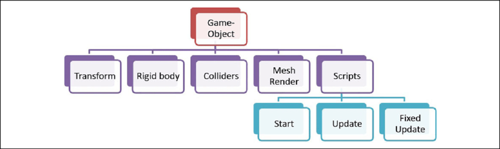
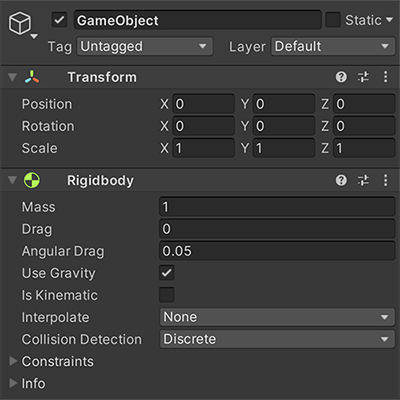
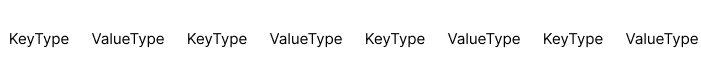
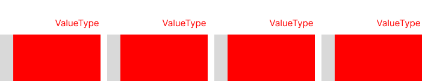
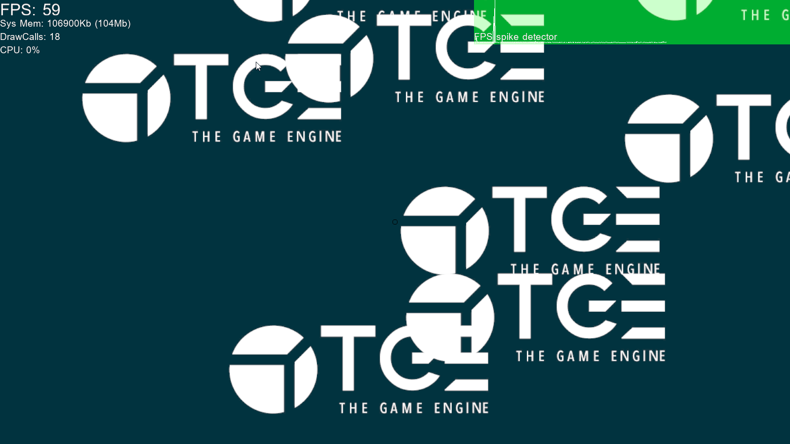

entiteter, komponenter och system
Innan vi snackar ECS
-
Kan det vara värt att snacka andra modeller
Arvsmodellen
- Objekt defineras av deras relationer till andra objekt
- Objekts komposition defineras statiskt
- Leder lätt till blobbar och refaktoriseringar
- Svårt för att optimera för hög prestanda
Statisk komposition
class Renderable
{};
class Collidable : public Renderable
{};
class Moveable : public Collidable
{}
class Player : public Movable
{
public:
void Move(Vec3 someDistance);
void Update(float aDT);
void Render();
private:
Transform transform;
Model model;
Vec3 minBounds;
Vec3 maxBounds
float health;
float damage;
}
GameObject-component model
- Används av spelmotorer som Unity
- Objekts komposition defineras i runtime av sina komponenter
- Lätt att göra integrerade editors och spara scener till fil
- Beteende implementeras med virtuella funktioner
- Fortfarande svårt att optimera för hög prestanda
Dynamisk komposition


Pseudokod
class Component
{
public:
virtual ~Component() {}
virtual void Update(GameObject* aOwner, float aDT) = 0;
};
template <typename T>
T* GameObject::AddComponent()
{
T* component = new T();
myComponents.push_back(component);
return component;
}
void GameObject::Update(float aDT)
{
for (Component* component : myComponents)
component->Update(this, aDT);
}
void Scene::Update(float aDT)
{
for (GameObject* gameObject : myGameObjects)
gameOject->Update(aDT);
}
void PlayerComponent::Update(GameObject* aOwner, foat aDT)
{
if (Input::Left())
aOwner->myPosition += Vector2(-1,0) * mySpeed * aDT;
if (Input::Right())
aOwner->myPosition += Vector2(1,0) * mySpeed * aDT;
}
Vad är ett entity component system?
- Likt ett gameObject-komponent system
- Dataorienterad design
- Logik separeras från komponenterna
Entititer
- Entititer representerar ett individuellt objekt i världen. De är byggstenarna av ett ecs, och agerar som en samling av komponenter.
- Likt GameObjects ni är vana med, men i ett ECS är entiteter bara ett unikt id, oftast implementerat som en unsigned int.
- Entiteter används som en nyckel till en associativ container, som kopplar entiteten till en komponent.
Komponenter
- Också likt komponenter i gameObject-komponent modellen
- Har ingen logik på sig, oftast bara en struct
- Definerar beteende och egenskaper av en entitet.
- Är oberoende och enkapsulerade.
- Kan läggas till och tas bort från entiteter i runtime.
System
- System har inget eget state, det utför beteendet som defineras av en uppsättning komponenter
- Fokuserar på en specifik uppgift, ett system har ingen koppling till komponenter som inte berör den uppgiften.
Fördelar - Varför
Flexibilitet 🤸
- Enkapsulering
- Lätt att lägga till och ta bort features
- Lös koppling mellan entiteter
Prestanda 🏃
-
Dataorientering, optimering för cache
- Komponenter av samma typ ligger på rad i minnet
- Iterering av komponenter kan göras linjärt
-
triviellt flertrådad arkitektur
- Lätt att garantera trådsäkerhet i system
Dataorientering - cache is king
- Läsa minne från RAM är 🐌, därför cachar vi ofta använt minne.
- När minne väl läses från RAM görs det i linjärt storleken av en cache-line, typiskt sett 64 bytes på x86/x64
Med detta i åtanke vill vi
- Tänka på datan i strukturerna vi använder
- Ta vara på caching och läsa minne i rad
- Undvika separata minnesallokeringar, allokera minne i chunks
Exempel - parallel arrays
Objektorienterat
struct AssociativeArray
{
Pair<KeyType, ValueType> myData[SIZE];
};
Dataorienterat
struct AssociativeParalellArray
{
KeyType myKeys[SIZE];
ValueType myValues[SIZE];
};
Objektorienterat
Dataorienterat

struct Pair
{
char myFirst;
int mySecond;
};
std::cout << sizeof(Pair) << '\n';
Pair = 8
struct MyStruct
{
char a;
int b;
char c;
};
std::cout << sizeof(MyStruct) << '\n';
MyStruct = 12
struct TheirStruct
{
int b;
char a;
char c;
};
std::cout << sizeof(TheirStruct) << '\n';
TheirStruct = 8
Objektorienterat
Dataorienterat
Kod
#define MAX_ENTITIES 1000
using Entity = uint32_t;
class Registry
{
public:
Entity Create()
{
if (myFreeEntities.Size())
{
return myFreeEntities.Dequeue();
}
return myNext++;
}
void Remove(Entity aEntity)
{
myFreeEntities.Enqueue(aEntity);
}
private:
Entity myNext = 0;
CommonUtilities::Heap<Entity> myFreeEntities;
}
Komponenter
- Associeras med en entitet
- Vill vi behålla på rad i minnet
- Det finns flera sätt att göra det
- Vi använder en sparse-set liknande struktur
template <typename T>
class ComponentArray
{
public:
T& Add(Entity aEntity)
{
assert(!Contains(aEntity));
myDense[mySize] = aEntity;
mySparse[aEntity] = mySize;
myComponents[mySize] = T();
++mySize;
return myComponents[mySize-1];
}
void Remove(Entity aEntity)
{
assert(Contains(aEntity));
Entity denseIndex = mySparse[aEntity];
--mySize;
std::swap(myComponents[mySize], myComponents[denseIndex]);
std::swap(myDense[mySize], myDense[denseIndex]);
mySparse[myDense[denseIndex]] = denseIndex;
T tmp = std::move(myComponents[mySize]);
}
bool Contains(Entity aEntity)
{
return aEntity < MAX_ENTITIES && mySparse[aEntity] < mySize && myDense[mySparse[aEntity]] == aEntity;
}
T& Get(Entity aEntity)
{
assert(Contains(aEntity));
return myComponents[mySparse[aEntity]];
}
T* GetComponents()
{
return myComponents;
}
Entity GetEntityByIndex(size_t aIndex)
{
return myDense[aIndex];
}
size_t Size()
{
return mySize;
}
private:
T myComponents[MAX_ENTITIES];
Entity myDense[MAX_ENTITIES];
Entity mySparse[MAX_ENTITIES];
size_t mySize = 0;
}
struct TransformComponent
{
Tga::Vector2f position;
};
struct SpriteComponent
{
const Tga::TextureResource* texture = nullptr;
};
struct VelocityComponent
{
Tga::Vector2f vel;
};
Registry registry;
ComponentArray<TransformComponent> transforms;
ComponentArray<SpriteComponent> sprites;
ComponentArray<VelocityComponent> velocities;
void GameWorld::Init()
{
auto& engine = *Tga::Engine::GetInstance();
Tga::Vector2ui intResolution = engine.GetRenderSize();
Tga::Vector2f resolution = { (float)intResolution.x, (float)intResolution.y };
for (int i = 0; i < 10; ++i)
{
Entity entity = registry.Create();
TransformComponent& transform = transforms.Add(entity);
transform.position = Tga::Vector2f(RandomFloat(), RandomFloat());
SpriteComponent& sprite = sprites.Add(entity);
sprite.texture = engine.GetTextureManager().GetTexture(L"Sprites/tge_logo_w.dds");
VelocityComponent& velocity = velocities.Add(entity);
velocity.vel = Tga::Vector2f(RandomFloat(), RandomFloat()) * 0.1f;
}
}
void VelocitySystem(ComponentArray<VelocityComponent>& someVelocities,
ComponentArray<TransformComponent>& someTransforms, float aDeltaTime)
{
for (int i = 0; i < someVelocities.Size(); ++i)
{
Entity e = someVelocities.GetEntityByIndex(i);
if (!someTransforms.Contains(e))
continue;
VelocityComponent& velocity = someVelocities.Get(e);
TransformComponent& transform = someTransforms.Get(e);
transform.position += velocity.vel * aDeltaTime;
}
}
void RenderSystem(ComponentArray<priteComponent>& someSprites,
ComponentArray<TransformComponent>& someTransforms)
{
auto& engine = *Tga::Engine::GetInstance();
Tga::SpriteDrawer& spriteDrawer(engine.GetGraphicsEngine().GetSpriteDrawer());
Tga::Vector2ui intResolution = engine.GetRenderSize();
Tga::Vector2f resolution = { (float)intResolution.x, (float)intResolution.y };
for (int i = 0; i < someSprites.Size(); ++i)
{
Entity e = someSprites.GetEntityByIndex(i);
if (!someTransforms.Contains(e))
continue;
SpriteComponent& sprite = someSprites.Get(e);
TransformComponent& transform = someTransforms.Get(e);
Tga::Sprite2DInstanceData instance;
instance.myPivot = { 0.5f, 0.5f };
instance.myPosition = transform.position*resolution;
instance.mySize = Tga::Vector2f{ 0.75f, 0.75f }*resolution.y;
instance.myColor = Tga::Color(1, 1, 1, 1);
Tga::SpriteSharedData sharedData = {};
sharedData.myTexture = sprite.texture;
spriteDrawer.Draw(sharedData, instance);
}
}
Resultat 😍
Med lite extra jobb
void Render(Registry& aRegistry)
{
for (Entity entity :
aRegistry.View<SpriteComponent, Transform>(Exclude<ExcludeComponent>()))
{
SpriteComponent& sprite = aRegistry.Get<SpriteComponent>(entity);
TransformComponent& transform = aRegistry.Get<TransformComponent>(entity);
RenderSprite(sprite, transform);
}
}
void Render(Registry& aRegistry)
{
for (auto&& [entity, sprite, transform] :
aRegistry.View<SpriteComponent, Transform>(ecs::Exclude<ExcludeComponent>).Each())
{
RenderSprite(sprite, transform);
}
}